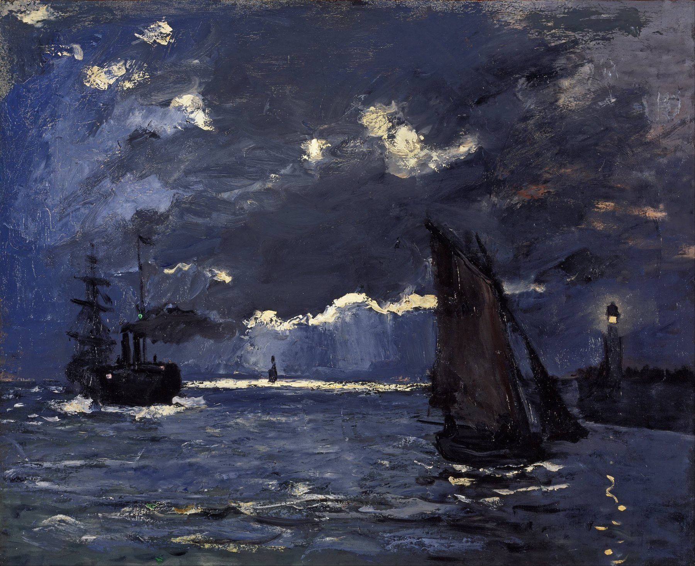
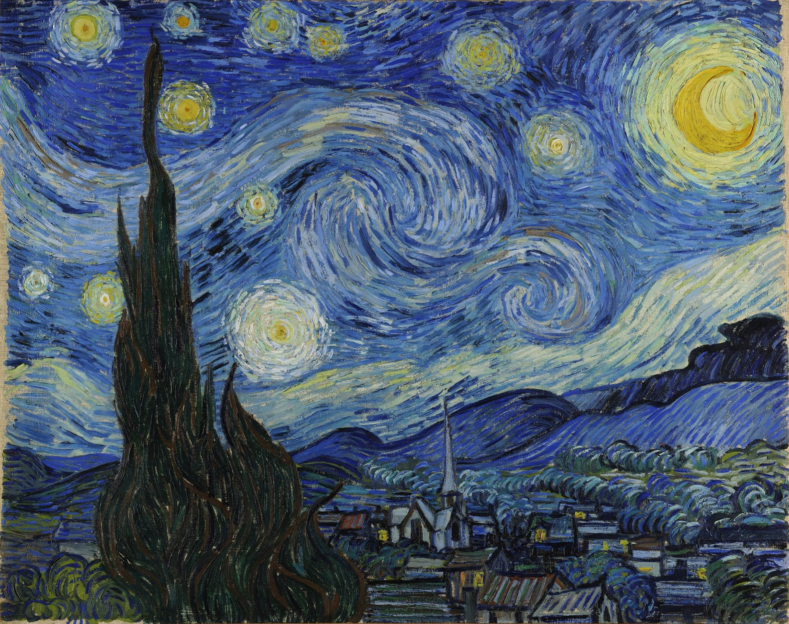
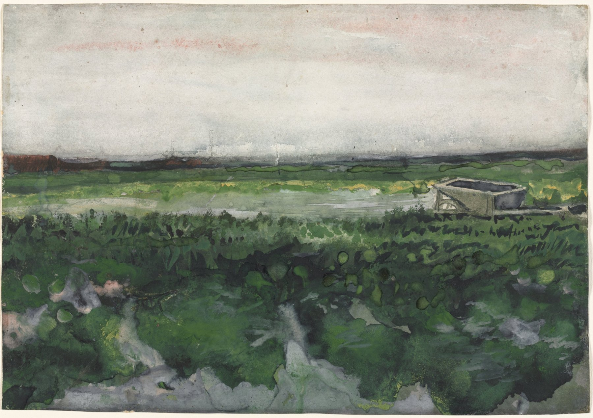
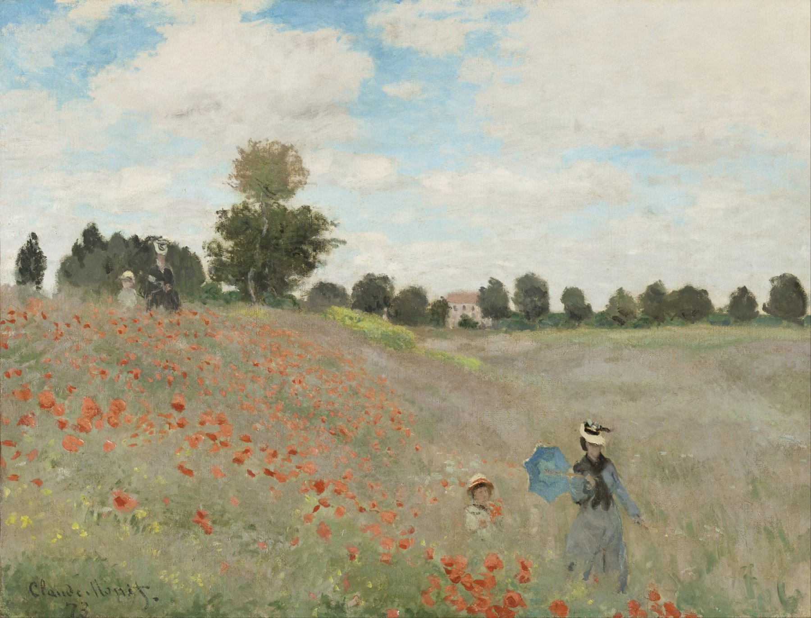

絵画を聴く
絵の中では、どんな音が鳴っていたのでしょうか。
「絵画を聴く」は、絵から音を立ち上げ、音を手がかりに絵の世界へ入っていく鑑賞の試みです。出発点は、全盲の友人と美術館で絵を見た経験でした。
ここでは、ドビュッシーのピアノ曲4曲を編曲し、それぞれに1点の絵を組み合わせました。曲の読みと絵が重なるところを手がかりに、編曲しています。
同じ絵を見ていても、聞こえる音は人によって違うかもしれません。どんな音が聞こえたか、隣の人と話してみてください。

01「月の光」クロード・モネ《月光の下の船》1864年頃
02「2つのアラベスク 第1番」フィンセント・ファン・ゴッホ《星月夜》1889年
03「ヒースの茂る荒れ地」フィンセント・ファン・ゴッホ《手押し車のある風景》1883年
04「亜麻色の髪の乙女」クロード・モネ《ひなげしの畑(アルジャントゥイユ近郊)》1873年
金子淳平